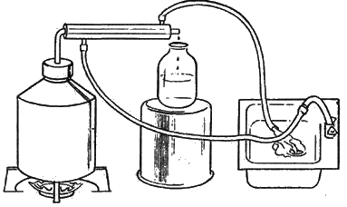
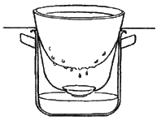
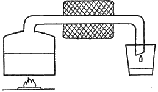

Самогон, водка и настойки. Процесс получения самогона .

Технология приготовления самогона в домашних условиях представляет собой процесс взаимодействия многих компонентов, которые требуют строгого соблюдения температурного режима на определенных этапах.
Этапы данного процесса включают в себя:
1) подготовка исходного сырья (в зависимости от того, какой мы хотим получить самогон, можно взять картофель, зерновые культуры и т. д.);
2) брожение (химический процесс, в результате которого сахар распадается на этиловый спирт, воду и углекислый газ. В процессе брожения в помещении присутствует определенный специфический запах);
3) перегонка (представляет собой выделение этилового спирта из спиртсодержащей смеси посредством нагревания и дальнейшего охлаждения);
4) очистка (от слова «чистый» – процесс очищения самогона от вредных примесей, которые непременно нужно удалить);
5) «облагораживание» (на этом этапе самогону придается определенный вкус благодаря добавлению ароматизаторов и различных красителей).
В процессе подготовки могут быть нарушены элементарные технологические требования, которые предъявляются на всех без исключения этапах приготовления самогона. Следствием этого станет мутный напиток, имеющий дурной запах.
Чтобы этого не произошло, а также время и деньги не были потрачены вами зря, советуем четко следовать правилам на каждом этапе технологического процесса. Цель оправдывает средства.
Сырье
Самогон хорош тем, что для его производства не требуется какого-либо определенного сырья. Это очень удобно, так как наша страна раскинулась на огромной территории и поэтому дефицит одних продуктов обусловлен изобилием других. К примеру, Краснодарский край, один из богатейших уголков нашей страны. Здесь прекрасно растут и дают высокие урожаи такие культуры, как виноград, сахарная свекла, злаковые: гречка, ячмень, пшеница; много овощей: томаты, картофель и т. д. Жители этого региона обладают правом выбора – что взять в качестве исходного продукта.
Однако есть территории, где специализируются на одной, двух или в крайнем случае трех культурах, так как выращивание является нерентабельным, убыточным. И мы еще раз повторяем, что для производства самогона подходят различные виды сырья, доступные тому или иному региону.
Следует, правда, иметь в виду следующее: выбор исходного сырья определяет качество готового продукта. Для того чтобы приготовить крепкий самогон высокого качества, желательно брать культуры, содержащие крахмал (пшеница, ячмень, рожь, просо и другие злаковые). Однако чтобы приготовить крахмальное сырье из злаковых культур, требуется:
во-первых, прорастить зерно (т. е. приготовить солод – высококачественную основу самогона). Для пшеницы срок проращивания составляет 7~8 дней, ржи – от 5 до 6 дней, овса – от 8 до 9 дней, ячменя – от 9 до 10 дней, а для проса достаточно 4–5 дней;
во-вторых, подготовить раствор из пророщенного зерна (т. е. солодовое молоко. Лучше всего здесь использовать смесь солода: просяной, ячменный и ржаной в соотношении 1:2:1).
Чтобы получить качественный продукт из плодов и ягод, требуется соответствующая обработка. Из картофеля мы будем иметь высококачественный самогон в том случае, если он подвергнется дополнительной обработке (еще одна очистка либо двойная перегонка).
Для приготовления тонких высококачественных сортов самогона нежелательно брать в качестве исходного сырья сахарную свеклу и ее выжимки, что подходит для простых, острых и резких напитков, характерных низкой себестоимостью.
Брожение
При изготовлении сахарного самогона используются сахар, дрожжи и вода. Соотношение продуктов рекомендуем следующее: 3 л воды, 1 кг сахара и 100 г дрожжей. Надо строго исходить из этих данных и ни в коем случае не отклоняться от рецепта. В нормальных условиях скорость реакции сбраживания пропорциональна концентрации сахара в браге. При достижении концентрации образовавшегося спирта выше 10 % реакция сбраживания прекращается.
Если брага содержит недостаточное количество сахара, то процесс брожения происходит медленно. Брожение является основным этапом технологического процесса приготовления самогона. Другими словами, брожение представляет собой сложную химическую реакцию, которая требует строгого температурного режима и определенной концентрации компонентов. Качество и выход готового продукта во многом зависят от того, как происходит сбраживание.
Важнейшим элементом процесса сбраживания являются дрожжи. Они представляют собой вещества, состоящие из микроскопических грибков, которые способствуют процессу брожения.
Продуктом жизнедеятельности дрожжей является спирт. Но здесь будьте внимательны: как только крепость браги достигнет 15 % и выше, большинство видов дрожжей погибнет. Это не зависит от наличия в браге еще не перебродившего сахара и может привести к дополнительным потерям.
Опытные винокуры знают, что брожение бывает различных видов: волнистое, переменное, смешанное, пенистое и покровное. Многообразие видов брожения обусловлено выбором различных видов используемого сырья. Так, например, для картофеля не считается нормальным покровное брожение. Если это все же произошло, то можно сделать вывод, что дрожжи ослабли. Для этого необходимо добавить сильные молодые дрожжи.
Нежелательным является пенистое брожение, которое зачастую ведет к выплескиванию сусла и потере сырья. Существует много различных способов, предназначенных для борьбы с этим вредным для самогоноварения явлением. Например, сильно сброженное дрожжевое тесто или чистый солод. Используются также пеногасящие средства: растительное масло или топленое сало, можно добавить печенье.
Чаще всего емкость просто переставляют из теплого места в более прохладное, а когда пик брожения проходит (примерно через 2–3 дня), возвращают ее на прежнее место.
Одним из самых важных факторов эффективности сбраживания является поддержание температуры (не ниже 18 °C и ни в коем случае не выше 24 °C). В начальный период брожения резкое похолодание может полностью его остановить, несмотря на то, что выбродил не весь сахар. Дрожжи при низкой температуре остаются живыми, хотя не могут работать, т. е. принимать участия в процессе образования этилового спирта. В данном случае повышают температуру, чтобы закончился процесс брожения, но для этого дрожжи необходимо перемешать, «возмутить».
Для брожения гораздо более опасной является высокая температура, так как она может ослабить жизнедеятельность дрожжей настолько, что их работу возобновить не удастся.
В этом случае рекомендуется снять дрожжевое сусло резиновой трубкой, поставить емкость в помещение с температурой не выше 20 °C (!) и добавить молодые свежие дрожжи.
Окончательно перебродившая брага приобретает специфический, слегка горьковатый вкус. В ней практически прекращаются выделение газа и образование пены. Но пузырьки газа со дна могут появиться при встряхивании емкости. Заметно меняется и запах браги: из резкого становится кисло-сладким. Весьма важно правильно определить момент созревания браги.
Выход конечного продукта существенно уменьшает использование недозревшей браги. Для каждого вида сырья существуют свои особые признаки созревания. Настоящее умение приходит с опытом и состоит в том, чтобы уловить этот момент.
Помимо реакции получения этилового спирта одновременно во время брожения происходит окисление образовавшегося спирта, в результате чего образуются вредные продукты, которые попадают в самогон.
К вредным продуктам относится уксусный альдегид (образуется при взаимодействии этилового спирта с воздухом и относится к третьему классу опасности). Метан, уксусная кислота, этанол – не менее опасные продукты окисления. Содержание вредных (вышеперечисленных) продуктов в браге и готовом продукте – самогоне – можно значительно снизить путем ограничения доступа воздуха во время брожения (установление водяного затвора).
Увеличение скорости сбраживания приводит к некоторому снижению содержания вредных продуктов окисления путем внесения в брагу дополнительной порции сахара (на 15–20 % повышается концентрация сахара), но это нежелательно, так как сказывается на себестоимости готового продукта.
Перегонка
Перегонкой называют сложную технологическую операцию, которая происходит в результате нагрева перебродившей браги до температуры кипения спиртсодержащеи смеси и дальнейшего охлаждения спиртовых паров, вследствие чего мы получаем этиловый спирт, выделенный из спиртсодержащеи смеси. Для перегонки браги и частичной очистки самогона используют различные конструкции самогонных и ректификационных аппаратов.
Мы уже говорили о том, что перегонка является сложным процессом, следовательно, необходимо строго соблюдать температурный режим на всех стадиях производства.
Сам процесс перегонки не сложен и при изготовлении самогонного аппарата не потребуется дорогих материалов и больших затрат (рис. 1).
Только в результате поэтапного нагревания браги можно получить качественный самогон. Это зачастую связано с большими трудностями, а иногда вообще невыполнимо. Режим нагрева браги не ограничивается, но следует иметь в виду, что чем выше скорость нагрева спиртсодержащей смеси, тем более эффективна работа самогонного аппарата.
Пусть не пугаются те, кто впервые берется за это дело. Здесь нет ничего страшного! Лучше всего купить термометр и им измерять температуру. Винокуры, не имеющие достаточного опыта, должны запомнить, что самогон, полученный в режиме нагрева браги 63–65 °C, соответствует температуре кипения легких примесей, содержащихся в браге. Начало процесса интенсивного испарения определяется при наличии в камере испарителя термометра, т. е. регистрационного прибора. Но при отсутствии термометра температуру можно определять по легкому спиртовому запаху, на стенках холодильника начинается конденсирование влаги (другими словами, происходит «запотевание». Если трубка стеклянная, то это видно невооруженным глазом), выделяются первые капли на выходной горловине холодильника и стенках приемной части самогонного аппарата.



Рис. 1. Процесс перегонки
Температура кипения этилового спирта составляет 78 °C. При температуре от 65 до 78 °C наступает самый ответственный момент, который требует резкого уменьшения скорости нагрева в относительно малом температурном пространстве. Иначе может произойти выброс влаги. Такой температурный режим соответствует началу перегонки самогона, но если концентрация спирта в смеси во время перегонки будет постоянно снижаться, это приведет к непроизвольному повышению температуры кипения браги (спиртсодержащей смеси). В результате ухудшаются условия перегонки. Соблюдение на протяжении основного времени перегонки температурного режима 78–83 °C является идеальным условием для получения качественного самогона.
Интенсивное выделение тяжелых фракций – сивушных масел – происходит при температуре смеси выше 83 °C. Если температура повысилась до этого уровня, можно сделать вывод, что в браге имеется минимальное содержание этилового спирта. Требуется повысить температуру браги, для того чтобы извлечь остатки в спиртсодержащей смеси. Повышение температуры, в свою очередь, приводит к интенсивному выделению сивушных масел (тяжелых фракций), которые значительно ухудшают качество самогона. Температура 85 °C соответствует температуре, при которой начинается интенсивное выделение сивушных масел.
Если температура браги будет превышать 85 °C (обратите внимание на показания термометра), то перегонку следует прекратить. При отсутствии термометра (который встраивают в испаритель) время прекращения перегонки определяется с помощью бумажки, смоченной в данный момент в самогоне. Перегонку следует продолжать в том случае, если бумажка вспыхивает синим огнем. Прекращение загорания говорит о том, что концентрация этилового спирта мала и в браге преобладают сивушные масла. Если нам необходимо через некоторое время выгнать еще одну партию самогона, то процесс перегонки следует продолжить. Продукт, получаемый в результате дальнейшей перегонки, получил название «двойной самогон». Его собирают в отдельную емкость и используют для переработки со следующей партией браги.
Если же двойной самогон не нужен, то перегонку прекращают сразу, после того как убедились, что в браге не присутствует этиловый спирт.